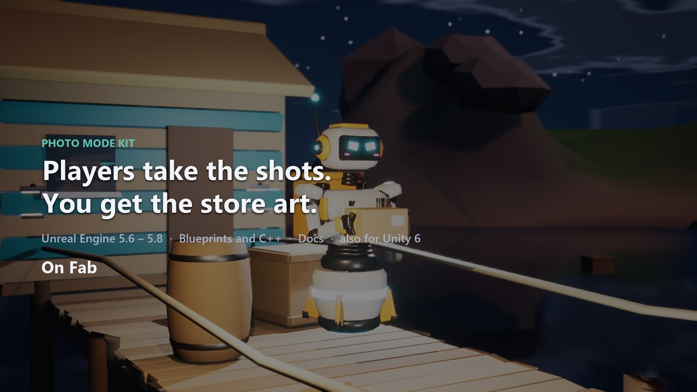

Photo Mode Kit
A complete photo mode in one component: freeze the game, fly a cinema camera, add depth of field, filters and lights, and save photos in exact Steam, YouTube and TikTok formats.

Quick start (Unreal Engine)
Unreal Engine 5.6, 5.7, 5.8
- Copy
PhotoModeKitinto<YourProject>/Plugins/. Restart the editor. - Open your PlayerController Blueprint and add the Photo Mode component.
- Play and press P (or the gamepad View button).
That's all: no input actions, no widgets. Optionally, bind On Photo Mode Changed to hide your HUD.
Unity 6 (URP)
- Add the package: Package Manager > + > Add package from disk, then pick
com.alicemedia.photomode/package.json. - Add Photo Mode (Add Component > Photo Mode > Photo Mode) to any GameObject in the scene.
- Drag your player into Player to get the range limit and Hide Player. Play and press P.
It works with the Input System package and with the legacy Input Manager.
Demo scene: Package Manager > Photo Mode Kit > Samples > Cove Demo > Import, then open Scenes/PhotoModeKit_Cove_Day (or _Night), press Play, fly with WASD and the right mouse button, press P.
Controls
| Keyboard and mouse | Gamepad | |
|---|---|---|
| Move | WASD, Q/E down/up, Shift faster, Ctrl slower | Left stick, triggers down/up |
| Look | Hold right mouse button | Right stick |
| Roll | Z / C | Bumpers |
| Zoom | Mouse wheel | D-pad up/down |
| Focus | Click anything in the frame | Auto focus |
| Take photo | Enter | A |
| Hide UI | H | Y |
| Surprise me | T | X |
| Guides | G | |
| Undo / redo | Ctrl+Z / Ctrl+Y | |
| Exit | Esc, P | B, View |
Formats
Frame > Format crops the photo and shows the format's safe zones: - Screen (the screen as it is); - ratios: 16:9, 21:9, 3:2, 4:3, 1:1, 4:5, 2:3, 9:16; - Steam capsules and the library hero, the store page background and screenshots; - Fab, Unity Asset Store, Epic and itch images; - YouTube thumbnails, Shorts / TikTok / Reels covers, Instagram, X; - a 4K wallpaper.
Exact formats are saved at their exact pixel size. The game renders larger when the crop would otherwise be blurry.
Hide the store formats from players with Show Store Formats (Project Settings > Plugins > Photo Mode Kit in Unreal, or the component in Unity).
Shot files
Every photo gets a .json next to it with the camera and every setting. Gallery > Recreate (or Load Shot) flies the camera back and restores the look, so you can re-render a capsule after an art pass.
Console (Unreal)
For capsule batches and automated screenshots. No component needed: the commands add one to the first player controller.
- PhotoMode.Enter / PhotoMode.Exit
- PhotoMode.Load <shot .json or photo>: opens photo mode with that camera and look.
- PhotoMode.Set <key> <value>: changes one setting by its shot file key, for example PhotoMode.Set color.filter noir, PhotoMode.Set frame.format steam-header, PhotoMode.Set lens.aperture 2.8. In Blueprint: Set Photo Setting.
- PhotoMode.Tab <0-6>: shows a panel tab (Camera, Lens, Color, Effects, Frame, Lights, Gallery).
- PhotoMode.Take: takes a photo (opens photo mode first).
Demo map (Unreal)
/PhotoModeKit/Demo/Maps/L_PMK_Cove_Day and L_PMK_Cove_Night (turn on Show Plugin Content in the Content Browser). Play, fly with WASD and the mouse, press P. The maps use Photo Mode Demo Game Mode in World Settings; your own maps are not affected.
Poses
- Unreal: implement
Photo Mode Posableon the pawn (Get Photo Poses, Apply Photo Pose). - Unity: implement
IPhotoModePosableon a component of the player.
Notes
- Unreal: the world is frozen with time dilation, so the camera keeps updating. Photos are captured from the real renderer (Lumen, TSR) without UI, cropped and resized on a worker thread.
- Unreal input after closing: Exit Input Mode in Project Settings > Plugins > Photo Mode Kit. Game Only by default; pick Game and UI for games with a mouse cursor or menus, or Leave Unchanged and set your own mode in On Photo Mode Changed.
- Unity: the game is paused with
Time.timeScale = 0. Photos are rendered from the photo camera at the output size, with post-processing through a runtime URP Volume.
Changelog
1.0.1
- Supports Unreal Engine 5.6, 5.7 and 5.8.
- The panel shows values to the precision of each slider (field of view 65.7 instead of 65.699997).
1.0.0 (first release, Unreal Engine 5.8 and Unity 6 URP)
- Camera:
- free cinema camera with collision and a range limit around the player;
- roll, FOV and focal length;
- depth of field with click-to-focus.
- Look:
- 15 procedural filters;
- exposure, contrast, saturation, white balance, tint, vignette, grain, chromatic aberration, bloom;
- three placeable lights with color temperature.
- Composition: thirds, golden ratio, golden spiral, center and diagonal guides.
- Output formats with exact sizes and safe zones:
- Steam capsules and store images;
- YouTube, Shorts, TikTok, Instagram;
- free ratios.
Photos are rendered larger when needed, then cropped and resized.
- Photos:
- PNG or JPG;
- a shot file next to each photo recreates the camera and the look.
- Gallery with favorites and delete.
- Editing: undo and redo; Surprise Me looks; poses through an interface.
- Interface:
- built-in panel with keyboard, mouse and gamepad;
- no input assets or widgets to set up (Unity: Input System or the legacy Input Manager).
- Unreal:
- one component on the PlayerController; world frozen with time dilation;
- Exit Input Mode setting (Game Only, Game and UI, Leave Unchanged);
- Set Photo Setting (Blueprint) and console commands PhotoMode.Enter, Exit, Load, Set, Tab, Take for scripted shots;
- demo maps: a stylized cove by day and by night with a robot to photograph.
- Unity: one component; game paused with Time.timeScale; post-processing through a runtime URP Volume.
Third-party content
None. All code, the 15 filters (lookup tables generated procedurally in code), the interface theme and the icon are original work by Alice Media. The Unreal plugin uses only engine modules; the Unity package uses only Unity packages (URP, optionally the Input System).
No AI-generated content (images, sounds, voice) is included in the product.
Support
Questions, bugs and ideas: https://github.com/alicemedia-cmyk/alice-media-docs/issues. Please include your engine version and the Photo Mode Kit version (1.0.1).